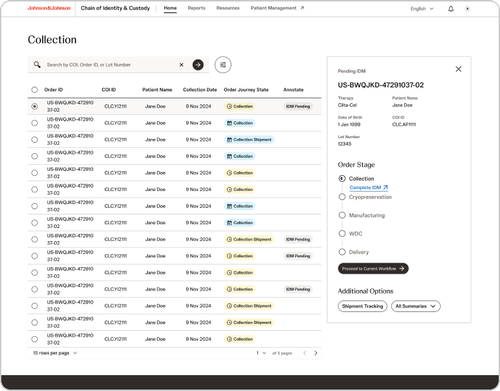
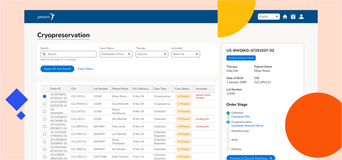
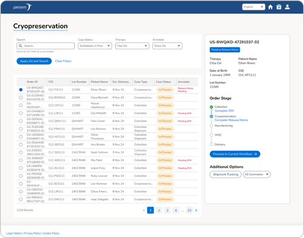

Project Reset
Rebuilt the core navigation of Johnson & Johnson's cell therapy platform, reaching the industry UX benchmark for the first time.

Turning a platform that carried a retired brand, looked like default Salesforce, and went by a name it didn't officially own into a coherent J&J product inside a CQUENCE® ecosystem: designed and hand-coded end to end.
The platform still wore a retired brand (Janssen), looked like out-of-the-box Salesforce, and users knew it by the wrong name.
Drove the naming and rebrand-rights decision with legal and leadership, then designed and hand-coded a J&J-aligned component library on Salesforce as the only designer.
A platform that now reads as one J&J product within the CQUENCE® ecosystem, shipping September 2026, plus a documented, mostly-native component system built to cut future engineering maintenance.
In 2023, Johnson & Johnson rebranded and made a strategic call: subsidiaries would no longer go by their own names publicly. Janssen became Johnson & Johnson. However, our platform still carried the Janssen logo, so we knew it couldn't stay.
But the brand problem went deeper than a logo. The platform actually answered to three different identities at once:
Its legal name: Chain of Identity and Chain of Custody (COI/COC) described the regulated process the platform oversees, but no user ever called it that.
The name users actually used was "CQUENCE®," after the shared login screen the platform borrowed at launch. For three years, users knew us by a brand we didn't officially own.
The look was essentially default Salesforce. Because Janssen's brand color was also blue, much of the internal team assumed the out-of-the-box styling was our brand. It wasn't anyone's brand.
That fragmentation had a real cost: roughly 10% of our users also use CQUENCE® (most visibly the apheresis nurses in hospitals), and they were moving between two products that shared a login but looked and felt like strangers.

Rename the platform to the internal legal name no user recognized, or claim the "CQUENCE®" name users already trusted, which the team didn't know if the product held the rights to?
A separate company held legal agreements that made both the CQUENCE® name and the J&J rebrand itself legally fuzzy. Getting this wrong wasn't a branding misstep, it was a compliance one.
I ran proposals to leadership across three months of working sessions, making the business case for the rebrand. I worked with legal to confirm we sat outside the other company's agreement (clearing us to adopt J&J branding) and to add an addendum that let us use the CQUENCE® name. I also received alignment to shorten the name to "Chain of Identity & Custody," landing on "CQUENCE® Chain of Identity & Custody." I secured funding by pointing to precedent: CQUENCE® in EMEA had already moved to J&J, making alignment a consistency win, not a nice-to-have.
Naming, rebrand rights, and funding all cleared. That was the foundation the entire design and build then stood on.
J&J's design system was never built for a Salesforce-based, data-entry platform like ours. Its components didn't fully overlap with the Salesforce Lightning Design System (SLDS), it had no patterns for a lot of what a data-heavy app needs, and J&J actually maintains two design systems whose tokens contradict each other. On top of that, we had to move fully off the default Salesforce styling everyone had mistaken for our brand.
To keep future maintenance low, I mapped which SLDS components behaved most like their J&J counterparts and kept the base of every component on LWC wherever possible. Custom code is a maintenance bill you pay forever; I only spent it where J&J genuinely had no equivalent.
Where J&J had no match, I designed components that borrow J&J's patterns (spacing, typography, color) and Salesforce's functionality. The clearest example: a two-layer navigation bar showing both the parent brand (CQUENCE®) and the product name, built from common web conventions while staying visually native to J&J.
I worked through both J&J systems, decided which tokens won where they conflicted, and wrote the development documentation so the coded system was internally consistent even though its sources weren't — a deliberate, documented set of judgment calls, not a copy-paste.
As the only designer, I owned the translation from J&J design system to Salesforce-ready system, and then I hand-coded the majority of it in HTML, CSS, and JavaScript alongside four in-house and two agency engineers.
I coded the token system (every design token and variable, reconciled across the two J&J systems into one coded set) and the component library — the navbar, footer, table, button, dropdown, date picker, single-line field, text area, radio button, checkbox, profile icon, the checklist side navigation, and an icon holder built to serve all 650+ J&J icons. I also coded the pages: landing, shipment tracking, upcoming orders, and the legal notice, cookie policy, and privacy policy pages.
I built accessibility into the process, not onto the end of it. I helped shape the testing strategy, adding Lighthouse checks so any page that didn't hit a green AA accessibility score got fixed before it moved on. And for any implementation I wasn't coding myself, I trained the developers on Figma Dev Mode so the design-to-dev handoff stayed clean.

Ahead of launch, leadership review has been the strongest signal so far. One VP, seeing the redesign for the first time, put it bluntly:
I never knew I hated the look of the original platform until I saw this redesign.
The broader leadership agrees that the platform finally feels like one harmonious J&J product within the CQUENCE® ecosystem — that it "feels like J&J." Beyond perception, the rebrand shipped concrete system wins: it moved the platform fully off default Salesforce styling and onto a true J&J identity, unified the experience with the CQUENCE® ecosystem for the shared user base, and delivered a documented, native-first component system built to reduce ongoing engineering maintenance, not add to it.
Under One Brand ships at the end of September 2026. A user survey goes out in November 2026 to measure the shift with the people who actually use it.